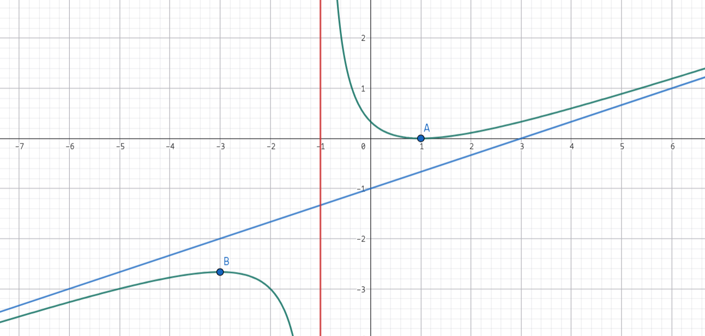

数学分析笔记 Chapter 4 微分中值定理及其应用
微分中值定理
定义 4.1 极值
假设 $f$ 在开区间 $(a, b)$ 上有定义，$x_0 \in (a, b)$。
如果存在 $x_0$ 的某个邻域 $o(x_0, \delta)$ 内，使得 $f(x) \le f(x_0), x\in o(x_0, \delta)$
则称 $x_0$ 为 $f(x)$ 的一个极大值点，此时 $f(x_0)$ 称为 $f(x)$ 的极大值。
类似的，可以定义极小值。
定理 4.1 Fermat 定理
如果 $x_0$ 为 $f$ 的一个极值点，并且 $f$ 在 $x_0$ 这一点是可导的。
则：这一点的导数一定是零
证明：
不妨认为其为极大值点，所以 $\exists \delta > 0 \text{ s.t. when } 0 < |x - x_0| < \delta : f(x) \le f(x_0)$（保证在定义域内）
所以 $x \in o(x_0, \delta)$ 时：
当 $x > x_0$ 时，$\dfrac{f(x) - f(x_0)}{x - x_0} \ge 0$。
当 $x < x_0$ 时，$\dfrac{f(x) - f(x_0)}{x - x_0} \le 0$。
利用极限的保序性，这两个都取极限可以知道：
$\lim\limits_{x \to x_0^+} \dfrac{f(x) - f(x_0)}{x - x_0} \ge 0; \lim\limits_{x \to x_0^-} \dfrac{f(x) - f(x_0)}{x - x_0} \le 0$。
换句话说 $f(x)$ 在 $x_0$ 处的右导数大于等于零，左导数小于等于零
因为 $f(x)$ 在 $x_0$ 处可导所以左右导数一定相等，等于 $0$。
证毕。
定理 4.2 Roll 中值定理
假设 $f$ 在闭区间 $[a, b]$ 上连续，从而一致连续。
在开区间 $(a, b)$ 上是可导的且 $f(a) = f(b)$。
则存在一点 $\xi \in (a, b)$ 使得 $f^\prime(\xi) = 0$
证明：
假设 $f$ 在 $[a, b]$ 上的最大最小值分别为 $M, m$（根据命题 2.16 闭区间上连续函数的最值性，一定可以取到）
- $M = m$，$f \equiv f(a) = f(b)$，这样的 $\xi$ 一定存在
-
$M \not= m \Rightarrow m < M$，则 $m, M$ 中至少有一个 $\not= f(a)$。不妨认为是 $M \not= f(a)$。
所以 $M > f(a) = f(b)$
设 $\xi$ 为 $f$ 的最大值点，那么 $\xi \not=a, \xi \not=b \Rightarrow \xi \in (a, b)$。
因为开区间上，最大值点一定是极大值点，由 Fermat 定理可以说明：$f^\prime(\xi) = 0$
定理 4.3 Lagrange 中值定理
设 $f$ 在 $[a, b]$ 上连续，在 $(a, b)$ 上可导，则 $\exists \xi \in (a, b) \text{ s.t. } f^\prime(\xi) = \dfrac{f(b) - f(a)}{b - a}$。

证明：
只需要证明：$\exists \xi \in (a, b) \text{ s.t. } f(b) - f(a) = (b - a) f^\prime(\xi)$
构造函数 $F(x) = f(b) - f(a) - (b - a)f(x)$。
想用 Roll 证明（把这个图转一下转平就是 Roll 的形式）：
$F(b)= f(b) - f(a) - (b-a)f(b)$
$F(a) = f(b) - f(a) - (b - a)f(a)$
它们不等，没法使用 Roll 中值定理
为什么要用 Roll，其实就是想要 $F^\prime$ 能构造出所需的项，这里 $f^\prime(x)$ 其实已经能造出来了，但前面还不行。
于是我们在 $f(b) - f(a)$ 上再乘一个 $x$。
所以
$F(b)= [f(b) - f(a)]x - (b-a)f(b)$
$F(a)= [f(b) - f(a)]x - (b-a)f(a)$
$F(a) = F(b)$ 且 $F$ 在 $(a, b)$ 上可导，$[a, b]$ 上连续。
由 Roll 中值定理，$\exists \xi \in (a, b) \text{ s.t. } F^\prime(\xi) = 0 = f(b) - f(a) - (b - a)f^\prime(\xi)$。
所以就证明了 Lagrange 中值定理。
定理 4.4 Cauchy 中值定理
假设 $f, g$ 在 $[a, b]$ 连续，在 $(a, b)$ 上可导。
$g^\prime(x) \not=0;\forall x \in (a, b)$。
则：$\exists \xi \in (a, b) \text{ s.t. } \dfrac{f(b) - f(a)}{g(b) - g(a)} = \dfrac{f^\prime(\xi)}{g^\prime(\xi)}$
证明：
用两次 Lagrange 中值定理就行吗？注意到这两个的 $\xi$ 可能不等。
继续构造函数。
即证：$\exists \xi \in (a, b) \text{ s.t. } [f(b) - f(a)]g^\prime(\xi) = [g(b) - g(a)]f^\prime(\xi)$。
构造函数：$F(x) = [f(b) - f(a)]g(x) - [g(b) - g(a)]f(x), x\in (a, b)$。
$F$ 在闭区间上连续，在开区间上可导。
还是想用 Roll，考虑 $F(a), F(b)$。
$F(a) = f(b)g(a) - f(a)g(a) - g(b)f(a) + g(a)f(a)$
$F(b) = f(b)g(b) - f(a)g(b) - g(b)f(b) + g(a)f(b)$
$F(b) - F(a) = [f(b) - f(a)]\cdot[g(b) - g(a)] - [g(b) - g(a)] \cdot [f(b) - f(a)] = 0$
（这个轮换式看起来不等但实际上是等的，感觉还比较重要）
$F(a) = F(b)$，由 Roll 中值定理，$\exists \xi \in (a, b) \text{ s.t. } F^\prime(\xi) = 0$ 即所证式。
命题 4.1
如果 $f$ 在 $[a, b]$ 上连续，在 $(a, b)$ 上可导且 $f^\prime(x)= 0, \forall x\in (a, b)$ 则 $f$ 为常数。
证明：
$\forall x \in [a, b]$，考虑 $[a, x] \subset [a, b]$
由 Lagrange 中值定理：$f(x) - f(a) = f^\prime(\xi)(x - a)$。
由于每一点都是 $f^\prime = 0$，所以 $f(x) = f(a)$。
恒等。
例题 4.1
证明 $|\sin x - \sin y| \le |x - y|, \forall x, y\in\mathbb{R}$
证明：
考虑函数：$f(t) = \sin t, t \in [x, y]$
由 Lagrange 中值定理：$\exists \xi \in [x, y] \text{ s.t. } f(x) - f(y) = f^\prime(\xi)(x - y)$
所以就是 $|\cos \xi| \cdot |x - y| \le |x - y|$。
这是恒等式，证毕。
例题 4.2 又一个判定一致连续的方法
假设 $f$ 在开区间上可导，且导数有界，且 $\exists M > 0 \text{ s.t. } |f^\prime(x)| \le M. x \in (a, b)$。
则 $f$ 在开区间上是一致连续的，其中 $a, b$ 可以为无穷。
证明：
任取 $x< y \in (a, b)$，所以 $f(x)$ 在 $[x, y]$ 上连续，在 $(a, b)$ 上可导。
由 Lagrange 中值定理，存在 $\xi \in [x, y] \text{ s.t. } f(x) - f(y) = f^\prime(\xi)(x - y)$。
两边同时取绝对值：$|f(x) - f(y)| = |f^\prime(\xi)||x - y|$
所以：$|f(x) - f(y)| \le M |x - y|$。
所以 $\forall \epsilon > 0, \text{ let }\delta = \dfrac{\epsilon}{M}, \text{ s.t. when } |x - y| < \delta : |f(x) - f(y)| \le M|x- y| < \epsilon$
所以 $f$ 是一致连续的。
函数的单调性和凸性
命题 4.2 单调性
设 $f$ 在 $I$ 上是可导的，则 $f$ 在 $I$ 上单调递增（减）的充分必要条件是其导数 $f^\prime(x) \ge 0 (\le 0)$
证明，先推必要性 $\Rightarrow$：
$f$ 在 $I$ 上是单调递增的，即 $\dfrac{f(x) - f(y)}{x - y} \ge 0, y \not= x \Rightarrow \dfrac{f(y) - f(x)}{y - x} \ge 0$。
固定 $x, \text{ let }y \to x$，所以 $f^\prime(x) > 0$。
证明充分性 $\Leftarrow$：
下证，$f$ 是单调递增的。
任取 $x, y\in I, x > y$。
下证：$f(x) > f(y)$。
由于 $f$ 在 $[y, x]$ 上连续且在 $(y, x)$ 上可导，根据 Lagrange 中值定理：$\exists \xi \in (y, x) \text{ s.t. } f(x) - f(y) = f^\prime(\xi)(x - y) \ge 0$。
证毕。
定义 4.2 凸性
假设 $f$ 在区间 $I$ 上有定义，对于 $\forall x, y \in I, \forall \lambda \in [0, 1], f[\lambda x + (1 - \lambda y)] \le \lambda f(x) + (1 - \lambda)f(y)$，则称 $f(x)$ 在 $I$ 上是下凸的。
类似，可以定义上凸函数。
（称 $\lambda t + (1 - \lambda) s$ 为 $s, t$ 的凸组合）

这里用一下相似很容易画出图。
定理 4.5
假设 $f$ 在区间 $I$ 上二阶可导。
则 $f$ 在 $I$ 上是下凸的 $\iff$ $f^{\prime\prime} \ge 0, \forall x \in I$
证明：$\Rightarrow$
假设 $f$ 是下凸的，$\forall x \in I, \forall \Delta x > 0$，只要 $x +- \Delta x \in I$，那么：
$\dfrac{f(x + \Delta x) + f(x - \Delta x)}{2} \ge f(\dfrac{x + \Delta x + x - \Delta x}{2}) = f(x)$（$\lambda = \dfrac{1}{2}$）
所以 $f(x + \Delta x) + f(x - \Delta x) \ge 2f(x)$
所以 $f(x + \Delta x) - f(x) \ge f(x) - f(x - \Delta x) \cdots (@)$
为什么要这么做，因为二阶导大于零就是一阶导单调递增。
任取 $x, y \in I$，不妨设 $x < y$。
令 $\Delta x_n = \dfrac{y - x}{n}$ 则 $n \to \infty, \Delta x_n \to 0$
有 $f(y) - f(y - \Delta x_n) \ge f(y - \Delta x_n) - f(y - 2\Delta x_n)$
（用了 $@$ 这个式子）
重复这样的操作可以得到：
$f(y) - f(y - \Delta x_n) \ge f[y - (n - 1)\Delta x_n] - f(y - \Delta x)$
所以 $\ge f(x + \Delta x_n) - f(x)$
两边同除 $\Delta x_n$：
$\dfrac{f(y) - f(y - \Delta x_n)}{\Delta x_n} \ge \dfrac{f(x + \Delta x_n) - f(x)}{\Delta x_n}$
同时让 $n\to \infty$。
由于 $f$ 可导，所以 $f^\prime(y) \ge f^\prime(x)$。
所以 $f^{\prime\prime} \ge 0$
证明 $\Leftarrow$：假设 $f^{\prime\prime} \ge 0$。
所以 $f^\prime$ 在 $I$ 上递增。
$\forall x, y \in I, x < y$，再取 $\lambda \in [0, 1]$。
令 $t = \lambda x + (1- \lambda) y$
根据凸组合的性质，$t \in [x, y]$。
边界情况其实不用证所以就是 $x < t < y$。
所以 $x - t = (1 - \lambda)(x - y); y - t = \lambda (y - x)$。
由 Lagrange 中值定理：
因为 $f$ 在 $[x, y]$ 上连续，且 $(x, y)$ 上可导。
所以
$\begin{cases}f(x) - f(t) = f^\prime(\xi)(x - t) = f^\prime(\xi)(1 - \lambda)(x - y), &\xi \in (x, t) \\ f(y) - f(t) = f^\prime(\eta) \lambda(y - x), &\eta \in (t, y)\end{cases}$
所以 $f(x) = f(t) + f^\prime(\xi)(1 - \lambda)(x - y)$。
由于 $f^\prime$ 单调递增，所以 $f(x) \ge f^\prime(t)(1 - \lambda)(x - y) + f(t) \cdots (1)$
对于 $y$ 同理：
$f(y) \ge f(t) + f^\prime(t) \lambda (y - x) \cdots(2)$
两个式子做凸组合：
$\lambda f(x) + (1 - \lambda)f(y) \ge f(t) + f^\prime(t)\lambda(1-\lambda)(x - y) + f^\prime(t)\lambda(1-\lambda)(y - x)$
定义 4.3 拐点
称 $f$ 图像上，曲线上凸与下凸的分界点为 $f$ 图像的拐点。
定理 4.6
设 $f$ 在区间 $I$ 上连续，$(x_0 + \delta, x_0 + \delta) \subset I$，其中 $\delta > 0$。
1) 设 $f$ 在 $(x_0 - \delta, x_0), (x_0, x_0 + \delta)$ 上二阶可导，若 $f^{\prime\prime}(x)$ 在 $(x_0 - \delta, x_0), (x_0, x_0 + \delta)$ 上符号相反，则 $(x_0, f(x_0))$ 是曲线 $y = f(x)$ 的拐点。
2) 若 $f$ 在 $(x_0 - \delta, x_0 + \delta)$ 二阶可导，且 $(x_0, f(x_0))$ 是 $y = f(x)$ 的拐点，则 $f^{\prime\prime}(x) = 0$
证明：
例子：
(0, 0) 是 $f(x) = x^3$ 的拐点，不是 $g(x) = x^4$ 的拐点。
定理 4.7 Jenson 不等式
若 $f$ 在区间 $I$ 上是下凸的（或上凸）
则 $\forall x_k \in I$ 和满足 $\lambda_1 + \lambda_2 + \cdots + \lambda_n = 1$ 的 $\lambda_k > 0, k = 1,2,3,4,\dots n$。
都有 $f(\sum\limits_{k = 1}^{n} \lambda_k x_k) \le \sum\limits_{k = 1}^{n}\lambda_k f(x_k)$。
上凸则改为 $\ge$
证明：
只考虑 $f$ 是下凸的：
$n = 2$ 的时候显然成立。
假设 $n = m > 2$ 时不等式成立：
$f(\lambda_1 x_1 + \lambda_2 x_2 + \dots + \lambda_n x_n) \le \lambda_1f(x_1) + \lambda_2f(x_2) + \dots + \lambda_nf(x_n)$
其中 $\lambda k > 0$ 且 $\sum\limits_{}^{}\lambda_k = 1$。
当 $n = m + 1$ 时
要证：$\sum\limits_{k = 1}^{m + 1} \lambda_k = 1$ 且 $\lambda_k > 0$ 时：
$f(\sum\limits_{k = 1}^{m + 1}\lambda_k x_k) \le \sum\limits_{k = 1}^{m + 1}\lambda_k f(x_k)$。
由于：$\sum\limits_{k = 1}^{m+1}\lambda_k x_k = \sum\limits_{k - 1}^{m}\lambda_k \cdot \sum\limits_{k = 1}^{m}\dfrac{\lambda_k x_k}{\sum\limits_{k = 1}^{m}\lambda_k} + \lambda_{m + 1}x_{m + 1}$
记 $\mu = \sum\limits_{k = 1}^{m}\lambda_k, x = \sum\limits_{k = 1}^{m} \dfrac{\lambda_k x_k}{\mu}$。
由于 $\mu + \lambda_{m + 1} = 1, \mu > 0, \lambda_{m + 1} > 0$，由 $f$ 下凸的定义：
$f(\sum\limits_{k = 1}^{m + 1}\lambda_k x_k) = f(\mu x + \lambda_{m + 1}k_{m + 1}) \le \mu f(x) + \lambda_{m + 1}f(x_{m + 1})$
由 $m$ 个数的归纳假设：
$f(x) = f(\sum\limits_{k = 1}^{m}\dfrac{\lambda_k x_k}{\mu})$。
记 $\mu_k = \dfrac{\lambda_k}{\mu}$。
那么$f(x) = f(\sum\limits_{k = 1}^{m + 1}\mu_k x_k) \le \sum\limits_{k = 1}^{m}\mu_k f(x_k)$
所以 $\mu f(x) \le \sum\limits_{k = 1}^{m}\lambda_k f(x_k) \Rightarrow \sum\limits_{k = 1}^{m + 1}f(\lambda_k x_k) \le \sum\limits_{k = 1}^{m + 1}\lambda_k f(x_k)$
定理 4.8
设 $f$ 在区间 $I$ 上连续，则下列等价（T.F.A.E）
1) $f$ 在 $I$ 上是下凸的。
2) $\forall x, y \in I$，有 $f(\dfrac{x + y}{2}) \le \dfrac{f(x) + f(y)}{2}$
3) $\forall x_1, x_2, \dots, x_n, x_n \in I$，$f(\dfrac{x_1 + x_2 + \dots x_n}{n}) \le \dfrac{f(x_1) + f(x_2) + f(x_3) + \dots + f(x_n)}{n}$
证明：1 推 2：
只需要在下凸函数的定义中取 $\lambda = \dfrac{1}{2}$。
2 推 3：
设 $x_1, x_2, x_3, x_4 \in I$ 有：
$f(\dfrac{x_1 + x_2 + x_3 + x_4}{4}) = f(\dfrac{\dfrac{x_1 + x_2}{2} + \dfrac{x_3 + x_4}{2}}{2}) \le \dfrac{f(\dfrac{x_1 + x_2}{2}) + f(\dfrac{x_3 + x_4}{2})}{2}$
继续用 (2)：
$\dfrac{\dfrac{1}{2}[f(x_1) + f(x_2)] + \dfrac{1}{2}[f(x_3) + f(x_4)]}{2} = \dfrac{f(x_1) + f(x_2) + f(x_3) + f(x_4)}{2^2}$
一般的，可以知道 $n = 2^k$ 都成立。
即:
$f(\dfrac{x_1 + x_2 + \dots + x_{2^k}}{2^k}) \le \dfrac{f(x_1) + f(x_2) + \dots + f(x_{2^k})}{2^k}$
由于 $\forall n \in \mathbb{N_+}, \exists k \in \mathbb{N_+} \text{ s.t. } 2^k \ge n$
令 $a_n = \dfrac{x_1 + x_2 + \dots x_n}{n}$
令 $x_{n + 1} = x_{n + 2} = \dots = x_{2^k} = a_n$，
所以 $f(\dfrac{x_1 + x_2 + \dots + x_n}{n}) = f(a_n) = f[\dfrac{n a_n + (2^k - n)a_n}{2^k}]$
$= f(\dfrac{x_1 + x_2 + x_3 + \dots x_n + x_{n + 1} + \dots + x_{2^k}}{2^k}) \le \dfrac{1}{2^k} [f(x_1) + f(x_2) + \dots f(x_n) + f(x_n + 1) + \dots + f(x_{2^k})]$
$= \dfrac{1}{2^k} [f(x_1) + f(x_2) + \dots + f(x_n) + (2^k - n)f(a_n)]$
两边同乘 $2^k$
$\Rightarrow 2^k f(a_n) \le \sum\limits_{k = 1}^{n} f(x_k) + (2^k - n)f(a_n)$
$\Rightarrow n f(a_n) \le \sum\limits_{k = 1}^{n}f(x_k) \Rightarrow f(\dfrac{x_1 + x_2 + x_3 + \dots x_n}{n} \le \dfrac{f(x_1) + f(x_2) + \dots + f(x_n)}{n})$
证明 3 推 1
要整：$\forall \lambda \in (0, 1); x, y \in I$ 有 $f(\lambda x + (1 - \lambda) y) \le \lambda f(x) + (1 - \lambda) f(y)$
先证明 $\lambda \in \mathbb{Q}$ 时是正确的：
设 $\lambda = \dfrac{n}{m}$，其中 $m > n, m,n \in \mathbb{N_+}$。
那么 $f(\lambda x + (1 - \lambda)y) = f(\dfrac{n}{m} x + \dfrac{m - n}{m}y) = f(\dfrac{x + \dots + x + y + \dots y}{m})$
$\le \dfrac{1}{m}[nf(x) + (m - n)f(y)] = \lambda f(x) + (1 - \lambda) f(y)\cdots(@)$。
对于一般的 $\lambda$，则存在一列有理数 $\{\lambda_k\} \to \lambda (k \to \infty)$。
由于 $f$ 连续：$f(\lambda_k) \to f(\lambda)$
由 $@$ 式：$f(\lambda_k x + (1 - \lambda_k)y) \le \lambda_k f(x) + (1 - \lambda_k)f(y)$。
两边 $k \to \infty$ 可以得到原式。
定理 4.9
假设 $f$ 在区间 $I$ 上有定义。
$\forall x_1, x_2, x_3 \in I$ 且 $x_1 < x_2 < x_3$。
那么下列说法等价：
1) $f$ 在 $I$ 上是下凸的。
2) $\dfrac{f(x_2) - f(x_1)}{x_2 - x_1} \le \dfrac{f(x_3) - f(x_1)}{x_3 - x_1}$
3) $\dfrac{f(x_3) - f(x_1)}{x_3 - x_1} \le \dfrac{f(x_3) - f(x_2)}{x_3 - x_2}$
4) $\dfrac{f(x_2) - f(x_1)}{x_2 - x_1} \le \dfrac{f(x_3) - f(x_2)}{x_3 - x_2}$。

定理 4.10
假设 $f$ 在区间 $I$ 上可导，则 $f$ 在区间 $I$ 上是下凸的，当且仅当
$y = f(x)$ 的函数图像的切线总是位于 $y = f(x)$ 的下方
证明 $\Rightarrow$：
要证明：$\forall x_0 \in I: f(x) > f(x_0) + f^\prime(x_0)(x- x_0)$
任取 $x \in I; x < x_0$。
取割线 $AB: A(x_0, f(x_0)), B(x, f(x))$。
$k_{AB} = \dfrac{f(x_0) - f(x)}{x_0 - x} < f^\prime(x_0)$（切线是割线的极限）
所以 $f(x) - f(x_0) < f^\prime(x_0)(x - x_0)$，就证完了。
在另外一边 $(x > x_0)$ 也是一样的。
$\Leftarrow$：
已知 $\forall f(x) > f(x_0) + f^\prime(x_0)(x - x_0)$。
假设 $\exists \lambda \in (0, 1), x_1, x_2 \in I \text{ s.t. } \lambda x_1 + (1 - \lambda) x_2 = x_0$。
令 $x = x_1$，带入已知条件：
$f(x_1) > f(x_0) + f^\prime(x_0)(x_1 - x_0) \iff f(x_1) > f(x_0) + f^\prime(x_0)(1 - \lambda)(x_1 - x_2)$。
同理令 $x = x_2$：
$f(x_2) > f(x_0) + f^\prime(x_0)(x_2 - x_0) \iff f(x_2) > f(x_0) + f^\prime(x_0)\lambda(x_2 - x_1)$
对一式二式做凸组合：
$\lambda f(x_1) + (1 - \lambda)f(x_2) > f(x_0) = f[\lambda x_1 + (1 - \lambda)x_2]$
证毕。
定理 4.11 导函数不存在第一类不连续点
设 $f$ 在区间 $(a, b)$ 上可导，那么，对于 $(a, b)$ 中的每个点，定要么是 $f^\prime$ 的连续点，要么是 $f^\prime$ 的第二类不连续点。
证明：
任取 $x_0 \in (a, b)$，由导数的定义：$f^\prime(x_0) = f^\prime_{+}(x_0) = \lim\limits_{x \to x_0^+} \dfrac{f(x) - f(x_0)}{x - x_0}$。
由于 $f(x)$ 在 $[x_0, x]$ 上连续可导：由 Lagrange 中值定理：$= \lim\limits_{x \to x_0^+}\dfrac{f^\prime(\xi)(x - x_0)}{x - x_0}, \xi \in (x_0, x)$。
然后上式 $= \lim\limits_{x \to x_0^+}f^\prime(\xi) = \lim\limits_{\xi \to x_0^+} f^\prime(\xi)$
如果极限 $\lim\limits_{t \to x_0^+}f^\prime(t)$ 存在，那么 $\lim\limits_{x \to x_0^+} f^\prime(x) = \lim\limits_{\xi \to x_0^+}f^\prime(\xi) = f^\prime(x_0)$
同理，如果 $\lim\limits_{t \to x_0^-}f^\prime(t)$ 存在也可以推出 $\lim\limits_{t \to x_0^-} f^\prime(t) = f^\prime(x_0)$
所以只要左右极限存在那它们一定相等且都等于函数值。
若至少有一个不存在那就是第二类不连续点。
定理 4.12 Darboux 定理（导函数介值性）
设 $f$ 在闭区间 $[a, b]$ 上可导，端点考虑单侧导数。
$\forall c \in (f^\prime(a), f^\prime(b))$（不妨假设 $f^\prime(a) < f^\prime(b)$），$\exists \xi \in [a, b] \text{ s.t. } f^\prime(\xi) = c$
证明：$F(x) \equiv f(x) - cx, x \in [a, b]$。
显然 $F(x)$ 在 $a, b$ 上也可导。
那么 $F^\prime_+(a) = \lim\limits_{x \to a^+} \dfrac{F(x) - F(a)}{x-a} = \lim\limits_{x \to a^+} [\dfrac{f(x) - f(a)}{x - a} - c] = f^\prime_+(a) - c = f^\prime(a) - c < 0$
同样可以知道 $F^\prime_-(b) = f^\prime_-(b) - c = f^\prime(b) - c > 0$。
所以：当 $x$ 与 $a$ 靠的足够近时，$F(x) < F(a)$；$x$ 与 $b$ 靠的足够近时，$F(x) < F(b)$。
所以 $F$ 不在 $a, b$ 两点取最小值。
注意到 $f$ 在闭区间上可导 -> 连续 -> $F$ 在 $[a, b]$ 上连续。
所以 $F$ 的最小值 $F(\xi)$ 必然在 $(a, b)$ 内取到。
且 $F$ 在 $[a, b]$ 上可导，由 Fermat 定理，$F^\prime(\xi) = 0 \iff f^\prime(\xi) = c$
应用
例 1
设 $a > 0$，函数 $f$ 在 $[a, b]$ 上是连续的，在 $(a, b)$ 上可导。
证明：$\exists \xi \in (a, b) \text{ s.t. } \dfrac{af(b) - bf(a)}{a - b} = f(\xi) - \xi f^\prime(\xi)$
证明：
其实就是要证明：$\dfrac{\dfrac{f(b)}{b} - \dfrac{f(a)}{a}}{\dfrac{1}{b} - \dfrac{1}{a}} = f(\xi) - \xi f^\prime(\xi)$
取 $F(x) = \dfrac{f(x)}{x}, G(x) = \dfrac{1}{x}$，显然他们在 $[a, b]$ 上连续，$(a, b)$ 上可导。
由 Cauchy 中值定理：
$\exists \xi \in(a, b)\text{ s.t. } \dfrac{F(b) - F(a)}{G(b) - G(a)} = \dfrac{F^\prime(\xi)}{G^\prime(\xi)}$
$\dfrac{F^\prime(\xi)}{G^\prime(\xi)} = \dfrac{\dfrac{\xi f^\prime(\xi) - f(\xi)}{\xi^2}}{-\dfrac{1}{\xi^2}} =f(\xi) - \xi f^\prime(\xi)$。
这就是我们想要的。
例 2
设 $f$ 在 $[a, b]$ 上连续，$(a, b)$ 上可导。
其中 $0 < a < b, f(a) \not= f(b)$。
证明：$\exists \xi, \eta \in (a, b), f^\prime(\xi) = \dfrac{a + b}{2\eta}f^\prime(\eta)$。
证明：（观察到 $2\eta = (\eta^2)^\prime$，但是想用中值定理需要类似 $b^2 - a^2$ 的形式，所以构造）
即证：$(b - a)f^\prime(\xi) = \dfrac{b^2 - a^2}{2\eta} f^\prime(\eta)$
即：
$2\eta f^\prime(\xi) = \dfrac{b^2 - a^2}{b - a} f^\prime(\eta)$
令 $g(x) = x^2, x\in [a, b]$，先用 Cauchy 中值定理：
$\exists \eta \in (a, b) \text{ s.t. } \dfrac{g(b) - g(a)}{f(b) - f(a)} = \dfrac{g^\prime(\eta)}{f^\prime(\eta)} = \dfrac{2\eta}{f^\prime(\eta)} = \dfrac{b^2 - a^2}{f(b) - f(a)}$
对比一下式子，现在就只需要要证明：$\dfrac{b^2 - a^2}{f(b) - f(a)} = \dfrac{b+a}{f^\prime(\xi)}$
消掉 $b + a: \dfrac{b - a}{f(b) - f(a)} = \dfrac{1}{f^\prime(\xi)}$。
再用一次 Lagrange 中值定理：$\exists \xi \in (a,b) \text{ s.t. } f^\prime(\xi) = \dfrac{f(b) - f(a)}{b - a}$。
例 3
比较大小：$e^\pi, \pi^e$。
取对数：$\pi\ln e, e\ln \pi$
比较 $\pi, e \ln \pi$ 就行，然后除过去比较 $\dfrac{\pi}{\ln \pi}, e \iff \dfrac{\ln \pi}{\pi}, \dfrac{1}{e}$ 就行。
可以构造函数 $f(x) = \dfrac{\ln x}{x}$。
$f^\prime(x) = \dfrac{1 - \ln x}{x^2}$。
当 $x \ge e$ 时，单调递减，所以 $f(e) > f(\pi)$
进而 $\pi^e > e^\pi$
例 4
证明：$x \ge \sin x \ge x - \dfrac{1}{6}x^3$
其实 Taylor 展开就行。
当然也可以构造函数 $f(x) = x - \sin x, g(x) = \sin x - x + \dfrac{x^3}{6}$。
第一个求一次导就行。
第二个：求两次导就行。
例 5
证明 Young 不等式：
设 $a, b \ge 0$，正数 $p, q \text{ s.t. } \dfrac{1}{p} + \dfrac{1}{q} = 1$
$ab < \dfrac{a^p}{p} + \dfrac{b^q}{q}$
其实只需要证明 $a, b \not=0$。
由于 $q = \dfrac{p}{p - 1} = 1 + \dfrac{1}{p - 1}$。
所以等价于 $ab \le \dfrac{a^p}{p} + \dfrac{b \cdot b^{\frac{1}{p - 1}}}{q} \iff 1 \le \dfrac{a^{p - 1}b^{-1}}{p} + \dfrac{a^{-1}b^{b^{\frac{1}{p - 1}}}}{q}$
令 $x = \dfrac{1}{a} b ^{\frac{1}{p - 1}} \Rightarrow (\dfrac{1}{x})^{p - 1} = a^{p - 1}b^{-1}$。
要证的就是 $1 \le \dfrac{1}{q}x + \dfrac{1}{p} x^{1 - p}; x > 0$
构造函数：$f(x) = \dfrac{x}{q} + \dfrac{x^{1 - p}}{p}$
求导：$f^\prime(x) = \dfrac{1}{q} + \dfrac{(1 - p)}{p}x^{-p} =\dfrac{(1 - x^{-p})}{q}$
极值点是 $x = 1$。
所以 $f(x) > f(1) = 1$，证毕。
例 6 Jordan 不等式
设 $x \in [0, \dfrac{\pi}{2}]$，则：
$\dfrac{2}{\pi}x \le \sin x \le x$
考虑函数 $f(x) = \dfrac{\sin x}{x}, x\in (0, \dfrac{\pi}{2}]$
然后就转化成导函数的问题，比较简单这里省去不做说明。
L'Hospital 法则
定理 4.13 L'Hospital 法则
假设函数 $f, g$ 在 $(a, a + \delta]$ 上可导，自然是连续的。
其中 $\delta > 0, g^\prime(x) \not=0, x \in (a, a + \delta]$。
如果 $\lim\limits_{x \to a^+}f(x) = \lim\limits_{x \to a^+} g(x) = 0$
或者 $\lim\limits_{x \to a^+}f(x) = \lim\limits_{x \to a^+} g(x) = \infty$。
且 $\lim\limits_{x \to a^+} \dfrac{f^\prime(x)}{g^\prime(x)}$ 存在。
则 $\lim\limits_{x \to a^+} \dfrac{f(x)}{g(x)} = \lim\limits_{x \to a^+} \dfrac{f^\prime(x)}{g^\prime(x)}$。
证明：
- 先考虑 $\dfrac{0}{0}$ 型的情况，设 $\lim\limits_{x \to a^+} \dfrac{f(x)}{g(x)} = A \in \mathbb{R}$。
注意这个形式，想要使用 Cauchy 中值定理。
补充定义：$f(a) = 0, g(a) = 0$，故 $f, g$ 在 $[a, a + \delta]$ 上连续，在 $(a, a + \delta)$ 上可导。
现在对 $f, g$ 在 $[a, a + \delta]$ 上用 Cauchy 中值定理：
即 $\forall x \in [a, a + \delta], \exists\xi \in (a, x) \text{ s.t. }, \dfrac{f(x) - f(a)}{g(x) - g(a)} = \dfrac{f^\prime(\xi)}{g^\prime(\xi)}$
那么：
$\dfrac{f(x)}{g(x)} = \dfrac{f^\prime(\xi)}{g^\prime(\xi)} \Rightarrow \lim\limits_{x \to a^+} \dfrac{f(x)}{g(x)} = \lim\limits_{x \to a^+} \dfrac{f^\prime(\xi)}{g^\prime(\xi)} = A$
- 再考虑 $\dfrac{\infty}{\infty}$ 的情况。
现在的问题是 $a$ 这个点没有定义不能类似上面的这种做法，但大体方向还是使用 Cauchy。
取一点 $x_0 \in (a, a + \delta)$。
$\dfrac{f(x) - f(x_0)}{g(x) - g(x_0)}$.
我们想把这个式子写作 $\dfrac{f}{g}$ 的形式：
那么：$\dfrac{f(x) - f(x_0)}{g(x) - g(x_0)} = \dfrac{f(x)}{g(x) - g(x_0)} - \dfrac{f(x_0)}{g(x) - g(x_0)}$。
由于 $\lim\limits_{x \to a^+} g(x) = \infty$。
所以当 $x \to a^+$ 时，$\dfrac{f(x) - f(x_0)}{g(x) - g(x_0)} = \dfrac{f(x)}{g(x) - g(x_0)}$。
再做一个神奇小变换：
$\dfrac{f(x)}{g(x) - g(x_0)} = \dfrac{f(x)}{g(x)} \cdot \dfrac{g(x)}{g(x) - g(x_0)}$。
$x \to a^+$ 时 $\dfrac{g(x)}{g(x) - g(x_0)} = 1$。
所以 $\lim\limits_{x \to a^+} \dfrac{f(x) - f(x_0)}{g(x) - g(x_0)} = \lim\limits_{x \to a^+} \dfrac{f(x)}{g(x)}$。
根据 Cauchy 中值定理：$\forall x \in [a, x_0] \exists \xi \in [a, x] \text{ s.t. } \dfrac{f(x) - f(x_0)}{g(x) - g(x_0)} = \dfrac{f^\prime(\xi)}{g^\prime(\xi)}$
然后就和上面一样了
这里用 $\epsilon-\delta$ 语言来写一下：
$\dfrac{f(x)}{g(x)} = \dfrac{f(x) - f(x_0)}{g(x) - g(x_0)}[1 - \dfrac{g(x_0)}{g(x)}] + \dfrac{f(x_0)}{g(x)}$
$\Rightarrow |\dfrac{f(x)}{g(x)} - A | = \left|\dfrac{f(x) - f(x_0)}{g(x) - g(x_0)}[1 - \dfrac{g(x_0)}{g(x)}] + \dfrac{f(x_0)}{g(x)} - A\right|$
$\le |1 - \dfrac{g(x_0)}{g(x)}| \cdot |\dfrac{f(x) - f(x_0)}{g(x) - g(x_0)} - A| + |\dfrac{f(x_0) - Ag(x_0)}{g(x)}|$
由于 $\lim\limits_{x \to a^+} \dfrac{f^\prime(x)}{g^\prime(x)}= A$。
故，$\forall \epsilon > 0, \exists \rho < \delta \text{ s.t. when } 0 < x - a < \rho : |\dfrac{f^\prime(x)}{g^\prime(x)} - A| < \epsilon$
取 $x_0 = a + \rho$：
那么 $\forall x \in [a, x_0]$，在 $[a, x_0]$ 上，使用 Cauchy 中值定理：
$\exists \xi \in [x, x_0] \text{ s.t. } \dfrac{f(x) - f(x_0)}{g(x) - g(x_0)} = \dfrac{f^\prime(\xi)}{g^\prime(\xi)}$
所以 $|\dfrac{f^\prime(\xi)}{g^\prime(\xi)}| < \epsilon$
由于 $\lim\limits_{x \to a^+} g(x) = \infty$。
所以对上面的 $\epsilon > 0, \exists\r \text{ s.t. when } 0 < x - a < r: |\dfrac{f(x_0) - Ag(x_0)}{g(x)}| < \epsilon$
同时也存在 $s > 0 \text{ s.t. when } 0 < x - a < s$ 时，有 $|\dfrac{g(x_0)}{g(x)}| < 1$（任取 $\epsilon$）
综上：
$\text{when } 0 < x - a < \min\{\rho, r, s\}$
有：
$|\dfrac{f(x)}{g(x)} - A| < 2\epsilon + \epsilon = 3\epsilon$。
所以 $\lim\limits_{x \to a^+} \dfrac{f(x)}{g(x)} = A$。
注记：将 $x \to a^+$ 换成 $x \to a, x\to a^-$ 仍旧成立。
注记：如果要计算 $\lim\limits_{x \to \infty} \dfrac{f(x)}{g(x)}$，只需要令 $t = \dfrac{1}{x}$，$\lim\limits_{t \to 0} \dfrac{f(\frac{1}{t})}{g(\frac{1}{t})}$ 再用洛必达法则。
注记：L'Hospital 只适用于 $\dfrac{0}{0}, \dfrac{\infty}{\infty}$
例题 4.3
计算：$\lim\limits_{x \to 0} \dfrac{x - \sin x}{x^3}$
$= \lim\limits_{x \to 0} \dfrac{1 - \cos x}{3x^2} = \lim\limits_{x \to 0} \dfrac{\sin x}{6x} = \dfrac{1}{6}$
当然第一步导完之后直接用等价无穷小量代换也行。
例题 4.4
求 $\lim\limits_{x \to 0} \left(\dfrac{a^x + b^x}{2}\right)^{\dfrac{1}{x}}$
设其 $=A$。
那么 $\ln A = \lim\limits_{x \to 0} \dfrac{\ln[(a^x + b^x) / 2]}{x}$
洛就行了。
例题 4.5
求 $\lim\limits_{x \to 0^+} x^x$
一样的根据 $\ln$ 的连续性先求一下对数然后拿出来：
设极限为 $A$：
则 $\ln A = \lim\limits_{x\to 0^+} (x \ln x)$
然后发现这个地方不知道怎么算了，单纯用极限运算法则的话会因为 $\ln x \to -\infty$ 而无法使用。
所以考虑洛必达法则，问题在于没有形式，所以构造一个：
$x \ln x = \dfrac{\ln x}{\dfrac{1}{x}}$
求导之后：$\dfrac{1}{-\dfrac{1}{x^2} \cdot x} = -x$。
所以 $A = 1$
例题 4.6
求 $\lim\limits_{x \to 0} (\dfrac{1}{x} - \dfrac{1}{e^x - 1})$
直接通分：
$\dfrac{e^x - 1 - x}{x(e^x - 1)}$
上下都是 $\to 0$ 所以直接洛必达。
例题 4.7
求 $\lim\limits_{x \to 1^-} (1 - x)^2\ln(1 - x)$ 的极限。
令 $t = 1 - x, t \to 0^+$ 就和 4.5 差不多了。
Taylor 定理
定理 4.14 带有 Peano 余项的 Taylor 展开式
假设函数 $f$ 在 $x_0$ 点具有 $n$ 阶连续导数，则：
$\exists x_0$ 的某个邻域 $O(x, \delta)$，使得，$\forall x \in O(x_0, \delta)$，都有：
$f(x) = f(x_0) + f^\prime(x_0)(x - x_0) + \dfrac{f^{\prime\prime}(x_0)}{2!}(x - x_0)^2 + \cdots + \dfrac{f^{(n)}(x_0)}{n!}(x - x_0)^n + r_n(x)$
其中 $r_n(x) = o((x - x_n)^n)$
证明：
令 $r_n(x) \equiv f(x) - [f(x_0) + f^\prime(x_0)(x - x_0) + c\dots + \dfrac{f^{(n)}(x_0)}{n!}(x - x_0)^n]$
（减掉的这一部分称为 $f$ 的 Taylor 多项式）
$\lim\limits_{x \to x_0} \dfrac{r_n(x)}{(x - x_0)^n} = \lim\limits_{x \to x_0} \dfrac{r_n^\prime(x)}{n(x - x_0)^{n - 1}}$
一直用 $\dfrac{0}{0}$ 的洛必达法则。
$= \lim\limits_{x \to x_0} \dfrac{r_n^{(n)}(x)}{n!} = \lim\limits_{x\to x_0}\dfrac{f^{(n)}(x) - f^{(n)}(x_0)}{n!}$
由于 $\lim\limits_{x \to x_0} r_n^{(n)}(x) = \lim\limits_{x\to x_0} f^{(n)}(x) - f^{(n)}(x_0) = 0$。
且 $f^{(n)}$ 在 $x_0$ 处连续，所以 $f^{(n)}(x) \to f^{(n)}(x_0), (x \to x_0)$。
于是 $\lim\limits_{x\to x_0} \dfrac{r_n(x)}{(x - x_0)^n} = \dfrac{1}{n!} \cdot 0 = 0$。
注：定理中对 $f^{(n)}$ 在 $x_0$ 点连续的要求可以去掉，减弱为在 $x_0$ 点存在 $n$ 阶导数。
第 n 次使用 L'Hospital 法则的时候其实要求 f 在 x0 这点连续
所以现在我们只能求到第 $n - 1$ 次，形如：
$\lim\limits_{x \to x_0} \dfrac{r_n^{(n - 1)}(x)}{(n - 1)!(x - x_0)}$。
根据定义：
$r_n^{(n - 1)}(x) = f^{(n - 1)}(x) - f^{(n - 1)}(x_0) - f^{(n)}(x_0)(x - x_0)$。
带入上式得到：
$\lim\limits_{x\to x_0}\left[\dfrac{f^{(n - 1)}(x) - f^{(n - 1)}(x_0)}{(n - 1)!(x - x_0)} - \dfrac{f^{(n)}(x_0)}{(n - 1)!}\right]$。
根据导数的定义：$f^{(n)}(x_0) = \lim\limits_{x\to x_0} \dfrac{f^{(n - 1)}(x) - f^{(n - 1)}(x_0)}{(x - x_0)}$。
我们发现带回去原式就等于 $0$，证毕。
定理 4.15 带有 Lagrange 余项的 Taylor 展开式
设 $f$ 在 $[a, b]$ 上具有 $n$ 阶连续导数。
且在 $(a, b)$ 上具有 $n + 1$ 阶导数。
假设 $x_0 \in [a,b]$ 为一定点，则：
$\forall x \in [a, b], f(x) = f(x_0) + f^\prime(x_0)(x - x_0) + \dfrac{1}{2!}f^{(2)}(x_0)(x - x_0)^2 + \cdots + \dfrac{1}{n!}f^{(n)}(x_0)(x - x_0)^n + r_n(x)$
其中 $r_n(x) = \dfrac{f^{(n + 1)}(\xi)}{(n + 1)!}(x - x_0)^{n + 1}, \xi$ 介于 $x, x_0$ 之间。
证明：
令 $F(t) = f(x) - [f(t)+f^\prime(t)(x - t)+\cdots+\dfrac{f^{(n)}(t)}{n!}(x - t)^n], G(t) = (x - t)^{n + 1}; t \in [a, b]$
作为 $t$ 的函数，$F,G$ 在 $[a, b]$ 上具有 $n$ 阶连续导数（因为 $f$ 有，$F,G$ 是 $f$ 的多项式）
要证明：$F(x_0) = \dfrac{f^{(n)}(\xi)}{(n + 1)!}G(x_0) \iff \dfrac{F(x_0)}{G(x_0)} = \dfrac{f^{(n + 1)(\xi)}}{(n + 1)!}$。
不妨假设 $x_0 < x$
在 $[x_0, x]$ 上对 $F, G$ 用 Cauchy 中值定理：
$\exists \xi \in (x_0, x) \text{ s.t. } \dfrac{F(x) - F(x_0)}{G(x) - G(x_0)} = \dfrac{F^\prime(\xi)}{G^\prime(\xi)}$，显然 $\xi \not= x$ 所以不会存在 $G^\prime(\xi) = 0$
展开：$\dfrac{F(x) - F(x_0)}{G(x) - G(x_0)} = \dfrac{-F(x_0)}{-G(x_0)} = \dfrac{F^\prime(\xi)}{G^\prime(\xi)}$
$G^\prime(t) = -(n + 1)(x - t)^n, F^\prime(t) = - [f^\prime(t) + f^{(2)}(t)(x-t)-f^\prime(t) + \dfrac{1}{2!}f^{(3)}(t)(x - t)^2 - f^{(2)}(t)(x - t) + \cdots + \dfrac{1}{n!}f^{(n + 1)}(t)(x - t)^{n}]$
这里注意到 $F^\prime$ 展开后中间可以消掉，所以 $F^\prime(t) = -\dfrac{1}{n!}f^{(n + 1)}(t)(x - t)^n$。
那么 $\dfrac{F^\prime(\xi)}{G^\prime(\xi)} = \dfrac{-f^{(n + 1)}(\xi)(x - \xi)^n}{-(n + 1)!(x - \xi)^n}$。
证毕。
命题 4.3 ex 在 x = 0 处的 Taylor 展开式：
$(x_0= 0): e^x = 1 + x + \dfrac{1}{2!}x^2 + \dfrac{1}{3!}x^3 + \cdots \dfrac{1}{n!}x^n + r_n(x)$ 其中 $r_n(x) = o(x^n) (x \to 0) \text{ or } r_n(x) =\dfrac{e^{\xi}}{(n + 1)!}x^{n + 1}, \xi$ 介于 $0, x$ 之间。
命题 4.4 sinx 在 x = 0 处的 Taylor 展开式：
$(x_0 = 0): \sin x = x - \dfrac{1}{3!}x^3 + \dfrac{1}{5!}x^5 - \cdots + \dfrac{(-1)^{n}}{(2n + 1)!}x^{2n + 1} + r_{2n + 1}(x)$
其中 $r_{2n + 1}(x) = o(x^{2n + 2}) \text{ or } r_{2n + 1}(x) = \dfrac{\sin(\xi + \dfrac{2n + 3}{2}\pi)}{(2n + 3)!}x^{2n + 3}$
注意一下这个 Peano 余项的样子！
证明：
令 $f(x) = \sin x, x\in \mathbb R$。
利用归纳法：$f^{(n)}(x) = \sin(x + \dfrac{k\pi}{2}), k = 0,1,2,\cdots$。
$f^{(k)}(0) = \sin(\dfrac{k\pi}{2}) = \begin{cases}0, &k \equiv 0 (\mod 2) \\ (-1)^{\frac{k-1}{2}}, &k \equiv 1 (\mod 2)\end{cases}$
于是就很容易写出来了。
求 Lagrange 余项：
$\dfrac{f^{(2n + 3)}(\xi)}{(2n + 3)!}(x - 0)^{2n + 3} = \dfrac{\sin(\xi + \dfrac{(2n + 3)\pi}{2})}{(2n + 3)!}x^{2n + 3}$
命题 4.5 cosx 在 x = 0 处的 Taylor 展开式
$(x_0 = 0): \cos x = 1 - \dfrac{1}{2!}x^2 + \dfrac{1}{4!}x^4 + \cdots + \dfrac{(-1)^{n}}{(2n)!}x^{2n} + o(x^{2n + 1})$
从理解上直接对 $\sin x$ 求个导
命题 4.6 ln(1 + x) 在 x = 0 处的 Taylor 展开式
$(x_0 = 0): \ln(1 + x) = x - \dfrac{1}{2}x^2 + \dfrac{1}{3}x^3 + \cdots + \dfrac{(-1)^{n - 1}}{n}x^{n} + r_n(x)$
其中 $r_n(x) = o(x^n), (x \to 0)$
命题 4.7 幂函数在 x = 0 处的 Taylor 展开式
若 $\alpha \in \mathbb R$
$(x_0 = 0): (1 + x)^{\alpha} = 1 + \alpha x + \dfrac{\alpha(\alpha - 1)}{2!} x^2 + \dfrac{\alpha(\alpha - 1)(\alpha - 2)}{x^3} + \cdots + \dfrac{\alpha^{\underline{n}}}{n!}x^n + r_n(x)$
其中 $r_n(x) = o(x^n), (x \to 0)$
命题 4.8 arctan x 在 x = 0 处的 Taylor 展开式
$(x_0 = 0): \arctan x = x - \dfrac{x^3}{3} + \dfrac{x^5}{5} + \cdots + \dfrac{(-1)^n x^{2n + 1}}{(2n + 1)} + r_{2n + 1}(x)$
其中 $r_{2n + 1}(x) = o(x^{2n + 2}), (x \to 0)$
命题 4.9 tan x 在 x = 0 处的 Taylor 展开式
$(x_0 = 0): \tan x = x + \dfrac{1}{3}x^3 + \dfrac{2}{15} x^5 + r_5(x)$。
其中 $r_5 = o(x^6) (x \to 0)$
例题 4.8 证明 e 是无理数
证明：反证：
假设 $e$ 是有理数，故存在充分大的 $m\in \mathbb N_+$ 使得 $(m!)e$ 是正整数。
利用 $e^x$ 的 Taylor 展开式：
$e^x = 1 + x + \dfrac{1}{2!}x^2 + \cdots + \dfrac{1}{m!}x^m + \dfrac{e^{\xi}}{(m + 1)!}x^{m + 1}$。
取 $x = 1 \Rightarrow e^x = 1 + 1 + \dfrac{1}{2!} + \dfrac{1}{3!} + \cdots + \dfrac{1}{m!} + \dfrac{e^{\xi}}{(m + 1)!}, \xi \in (0, 1)$
那么 $(m!)e = m! + m^{\underline{m - 1}} + m^{\underline{m - 2}} + \cdots + 1 + \dfrac{e^{\xi}}{m + 1}$。
前面均为整数。
所以 $\dfrac{e^{\xi}}{m + 1}$ 应该为正整数。
但是 $1 < e^{\xi} < e < 3$。所以 $\dfrac{e^{\xi}}{m + 1} \in (\dfrac{1}{m + 1}, \dfrac{3}{m + 1}) \cap \mathbb Z$
当 $m \ge 3$ 时后面为空集。
故矛盾。
例题 4.9
$\lim\limits_{x\to 0}\dfrac{\cos x - e^{\frac{-1}{2}x^2}}{x^4} = ?$
洛必达的话运算量会有一点大。
考虑用 Taylor 展开式来做这个题。
利用 $e^x, \cos x$ 在 $0$ 点的 Taylor 展开式：
令 $t = \dfrac{-1}{2}x^2$，
$e^x = 1 + x + \dfrac{1}{2!}x^2 + \dfrac{1}{3!}x^3 + \dfrac{1}{4!}x^4 + o(x^4), (x \to 0)$。
$e^{\frac{-1}{2}x^2} = 1 - \dfrac{1}{2}x^2 + \dfrac{1}{2!}\dfrac{1}{4}x^4 + o_1(x^4) (x\to 0)$
$\cos x = 1 - \dfrac{1}{2}x^2 + \dfrac{1}{4!}x^4 + o_2(x_4) (x\to 0)$。
$\cos x - e^x = (\dfrac{1}{24} - \dfrac{1}{8})x^4 + o_2(x^4) - o_1(x^4)$。
所以原极限 $= -\dfrac{1}{12}$
例题 4.10
$\lim\limits_{x \to 0} \dfrac{\ln(1 + \sin^2 x) - 6(\sqrt[3]{2 - \cos x} - 1)}{x^4} = ?$
$\sin x = x - \dfrac{1}{3!}x^3 + \dfrac{1}{5!}x^5 + o(x^5); (x\to 0)$
$\ln (1 + t) = x- \dfrac{1}{2}t^2 + \dfrac{1}{3}t^3 + o(t^3); (x \to 0)$
$\cos x = 1 - \dfrac{1}{2!}x^2 + \dfrac{1}{4!}x^4 + o(x^4); (x\to 0)$
$(1 + t)^{\frac{1}{3}} = 1 + \dfrac{t}{3} + \dfrac{1}{2!}\dfrac{1}{3}(\dfrac{1}{3} - 1)t + \dfrac{1}{3!}\dfrac{1}{3}(\dfrac{1}{3} - 1)(\dfrac{1}{3} - 2)t^3 + o(t^3) (t \to 0)$
由于 $\sin^2 x \to 0, (x \to 0)$ 用第二个：
$\ln(1 + \sin^2 x) = \sin^2x - \dfrac{1}{2}\sin^4x + \dfrac{1}{3}\sin^6x + o(\sin^6 x);(x\to 0)$
再用第一个式子：
$\ln(1 + \sin^2x) = (x - \dfrac{1}{3!}x^3 + \dfrac{1}{5!}x^5 + o(x^6))^2 - \dfrac{1}{2}(x - \dfrac{1}{3!}x^3 + \dfrac{1}{5!}x^5 + o(x^6))^4 + \dfrac{1}{3}(x - \dfrac{1}{3!}x^3 + \dfrac{1}{5!}x^5 + o(x^6))^6 + o(x^6), (x \to 0)$
每一部分只拿出不是 $o(x^4)$ 的（因为分母有这个所以只需要考虑这些就行）
$= x^2 - \dfrac{1}{3}x^4 - \dfrac{1}{2}x^4 + o(x^4); (x\to 0)$
（每个次方项做组合找不高于四阶的）
然后 $\sqrt[3]{2 - \cos x} = \sqrt[3]{1 - (1 - \cos x)} = 1 + \dfrac{1}{3}(1 - \cos x) + \dfrac{1}{2!} \dfrac{1}{3}(\dfrac{1}{3} - 1)(1 - \cos x)^2 + o(1 - \cos x)^3 = \dfrac{11}{9} - \dfrac{1}{3}\cos x - \dfrac{2}{9}\cos x - \dfrac{1}{9}\cos^2 x + o((1 - \cos x)^2)$
当然由于 $1 - \cos x \approx \dfrac{1}{2}x^2; (x\to 0)$，上面就是 $o(x^4)$
$= \dfrac{11}{9} - \dfrac{1}{9}(1 - \dfrac{1}{2}x^2 + \dfrac{1}{4!}x^4 + o(x^4)) + \dfrac{1}{9}(1 - \dfrac{1}{2}x^2 + \dfrac{1}{4!}x^4 + o(x^4))^2$
$=1 + (\dfrac{1}{18}x^2 + \dfrac{1}{9}x^2) - \dfrac{1}{9 \times 24} x^4 - \dfrac{2}{9 \times 24}x^4 - \dfrac{1}{36}x^6 + o(x^4)$
$\Rightarrow 6(\sqrt[3]{2 - \cos x} - 1) = x^2 - \dfrac{1}{4}x^4 + o(x^4); (x\to 0)$
所以原式等价于：
$\lim\limits_{x\to 0} \dfrac{-\dfrac{5}{6}x^4 + \dfrac{1}{4}x^4 + o(x^4)}{x^4} = -\dfrac{7}{12}$
例题 4.11
假设 $f$ 在 $(-\infty, +\infty)$ 上有二阶导数。
1) 如果 $|f(x)| < A, |f^{\prime\prime}(x)| \le B, x\in [0, 1]$，证明 $|f^\prime(x)| < 2A + \dfrac{B}{2}, x \in [0, 1]$
2) 若 $M_k = \sup\limits_{x \in \mathbb R} |f^{(k)}(x)|, k = 0,1,2,\cdots$。证明：如果 $M_0 < \infty, M_2 < \infty$，则 $M_1 < \infty$ 且 $M_1 \le 2\sqrt{M_0M_2}$。
证明导数之间不等式，中间值之类的一般用有 Lagrange 余项的 Taylor 展开。
Peano 主要是计算。
证明第一个：
利用 Taylor 定理：
$\forall x_0 \in \mathbb R$
$f(x) = f(x_0) + f^\prime(x_0)(x - x_0) + \dfrac{1}{2!}f^{\prime\prime}(\xi)(x - x_0)^2, \forall x$
其中 $\xi$ 介于 $x, x_0$ 之间。
考虑凑出来 $f^\prime$，不然没法做。
分别取 $x_0 = 0, 1$，只考虑 $x \in [0, 1]$。
则 $f(x) = f(0) + f^\prime(0)x + \dfrac{1}{2!}f^{\prime\prime}(\xi_1)x^2$，$\xi_1 \in (0, x)$
$f(x) = f(1) + f^\prime(1)(x - 1) + \dfrac{1}{2!}f^{\prime\prime}(\xi_2)(x - 1)^2$，$\xi_2 \in (x, 1)$
凑 $f^\prime$，求导吗，我们发现这不行，因为 $\xi$ 也会变。
我们换个办法：
取 $x = 0, 1$：
$f(0) = f(x_0) + f^\prime(x_0)(-x_0) + \dfrac{1}{2!}f^{\prime\prime}(\xi_1) x_0^2, \xi_1 \in (0, x_0)$
$f(1) = f(x_0) + f^\prime(x_0)(1-x_0) + \dfrac{1}{2!}f^{\prime\prime}(\xi_2) x_0^2, \xi_2 \in (x_0, 1)$
两式相减：
$f(1) - f(0) =f^\prime(x_0) + \dfrac{1}{2}f^{\prime\prime}(\xi_2)(1 - x_0)^2 - \dfrac{1}{2}f^{\prime\prime}(\xi_1)x_0^2$
所以 $|f^\prime(x_0)| \le |f(1)| + |f(0)| + \dfrac{1}{2}|f^{\prime\prime}(\xi_2)(1 - x_0)^2| + |\dfrac{1}{2}f^{\prime\prime}(\xi_1)x_0^2|$
根据条件：
$|f^\prime(x_0)| \le 2A + \dfrac{B}{2}[(1 - x_0)^2 + x_0^2], x_0 \in [0, 1]$
所以 $|f^\prime(x_0)| \le 2A + \dfrac{B}{2}$
□
证明第二个：
在 $f(x)$ 展开式中令 $h = x - x_0 \in \mathbb R$，那么：
$f(x_0 + h) = f(x_0) + f^\prime(x_0) h + \dfrac{1}{2} f^{\prime\prime}(\xi) h^2$
更一般的： $f(x + h) = f(x) + f^\prime(x) h + \dfrac{1}{2} f^{\prime\prime}(\xi) h^2$
（$\xi$ 介于 $x, x + h$ 之间）
设 $h > 0$。
$f^\prime(x) = \dfrac{f(x + h) - f(x)}{h} - \dfrac{1}{2}f^{\prime\prime}(\xi)h \Rightarrow$
$|f^\prime(x)| \le \dfrac{|f(x + h) - f(x)|}{h} + \dfrac{1}{2} |f^{\prime\prime}(x)|h \le \dfrac{2M_0}{h} + \dfrac{M_2}{2}h$
注意这里是 $\forall x$
所以其实就是 $|f^\prime(x)| \le \min(\dfrac{2M_0}{h} + \dfrac{M_2}{2}h) = 2\sqrt{M_0M_2}$
所以 $|f^\prime(x)| \le 2\sqrt{M_0M_2}$，两边都取上确界就证完了。
□
注：$f(x + h) = f(x) + f^\prime(x)h + \dfrac{1}{2!} f^{\prime\prime}(x)h^2 + \cdots + \dfrac{f^{(n)}(x)}{n!}h^n + \dfrac{f^{(n + 1)}(\xi)}{(n + 1)!}h^{n + 1}$ 也是一种常用的展开形式（和 x 无关）。
注2：如果把命题改成 $|f^\prime(x)| \le \sqrt{2M_0M_2}$ 也是可以做的。
做法是展开 $f(x - h) = f(x) - f^\prime(x)h + \dfrac{1}{2}f^{\prime\prime}(\eta) h^2$，解出 $f^{\prime}(x)$ 之后再分析函数最值就行了。
$f^{\prime}(x) = \dfrac{f(x + h) - f(x - h)}{2h} - \dfrac{h}{4}[f^{\prime\prime}(\xi) - f^{\prime\prime}(\eta)]$
$|f^{\prime}(x)| \le \dfrac{M_0}{h} + \dfrac{h}{4} \cdot 2M_2 = \dfrac{M_0}{h} + \dfrac{h}{2}M_2$
由于 $\dfrac{M_0}{h} + \dfrac{h}{2}M_2 \ge 2\sqrt{\dfrac{M_0M_2}{2}} = \sqrt{2M_0 M_2}$
所以 $\sup |f^{\prime}(x)| = M_1 \le \sqrt{2M_0M_2}$
注意取等条件。
TODO 还能不能更紧
例题 4.12
若 $f$ 在 $[0, 1]$ 上二次可微，$f(0) = f(1) = 0, \max\limits_{x \in [0, 1]} f(x) = 2$。
求证：$\min\limits_{x\in [0, 1]}f^{\prime\prime}(x) \le -16$
证明：
考虑利用 Taylor 定理。
现在问题是不知道在哪里展开，所以随便找个 $x_0 \in [0, 1]$ 展开一下：
$f(x) = f(x_0) + f^\prime(x_0)(x - x_0) + \dfrac{1}{2!}f^{\prime\prime}(x_0)(x - x_0)^2$
注意到 $\max f = 2$，且连续，且最大值不在端点取到，则 $\exists x_0 \in (0, 1) \text{ s.t. } f(x_0) = 2, f^\prime(x_0) = 0$
我们在这一点展开：
$f(x) = 2 + \dfrac{1}{2}f^{\prime\prime}(x_0)(x - x_0)^2$
令 $x = 0, 1$：
$0 = 2 + \dfrac{1}{2} f^{\prime\prime}(\xi_1) x_0^2$
$0 = 2 + \dfrac{1}{2} f^{\prime\prime}(\xi_2) (1 - x_0)^2$。
$x_0 \not= 0$
所以 $f^{\prime\prime}(\xi_1) = \dfrac{-4}{x_0^2}, f^{\prime\prime}(\xi_2) = \dfrac{-4}{(1 - x_0)^2}$。
所以 $\min f^{\prime\prime}< \min\{\dfrac{-4}{x_0^2}, \dfrac{-4}{(1 - x_0)^2}\}$
取 $x_0 = \dfrac{1}{2}$ 即可得到原式（其他情况都不会比 $x_0 = \dfrac{1}{2}$ 小）
例题 4.13
若 $f$ 在 $[a, b]$ 上二次可微，$f^\prime(a) = f^\prime(b) = 0$。
证明：$\exists \xi \in (a ,b) \text{ s.t. } |f^{\prime\prime}(\xi)| \ge \dfrac{4}{(b - a)^2} |f(b) - f(a)|$。
继续直接照抄 Taylor 展开式：
$f(x) = f(x_0) + f^\prime(x_0)(x - x_0) + \dfrac{1}{2!}f^{\prime\prime}(\eta)(x - x_0)^2$
令 $x_0 = a, b$ 然后代进去：
$f(x) = f(a) + \dfrac{1}{2}f^{\prime\prime}(\eta_1)(x - a)^2, \eta_1 \in (a, x)$
$f(x) = f(b) + \dfrac{1}{2}f^{\prime\prime}(\eta_2)(x - b)^2, \eta_1 \in (x, b)$
直接一减：
$f(b) - f(a) = \dfrac{1}{2}[f^{\prime\prime}(\eta_1)(x - a)^2 - f^{\prime\prime}(\eta_2)(x - b)^2]$
由于 $x$ 任意，取 $x = \dfrac{a + b}{2}$。
于是 $f(b) - f(a) = \dfrac{1}{8}(a + b)^2 (f^{\prime\prime}(\eta_1) - f^{\prime\prime}(\eta_2))$
取绝对值：
$|f(b) - f(a)| = |\dfrac{1}{8}(a + b)^2 (f^{\prime\prime}(\eta_1) - f^{\prime\prime}(\eta_2))| \le \dfrac{(b - a)^2}{8}[|f^{\prime\prime}(\eta_1)| + |f^{\prime\prime}(\eta_2)|]$
随便认为一个是更大的，然后多一个 $2$ 出来就变成要证明的式子了。
取 $\eta = \max\{\eta_1, \eta_2\}$，后面那坨 $\le 2 |f^{\prime\prime}(\eta)|$ 就行。
注：如果改为二阶连续导数做法更简单 （用介值定理）
去掉连续用 Darboux
综合应用
例 1
设 $f$ 在 $[a,b]$ 上三阶导数存在，求证：
$\exists c \in (a, b) \text{ s.t. } f(b) = f(a) + f^{\prime}(\dfrac{a + b}{2})(b - a) + \dfrac{1}{24}f^{(3)}(c)(b - a)^3$
证明：
基本的思路大概是用 Taylor 定理（因为有高阶导数），中值定理（因为有这样“存在”的形式）
利用待定系数：
令 $k \in \mathbb R \text{ s.t. }$
$f(b) = f(a) + f^{\prime}(\dfrac{a + b}{2})(b - a) + k(b - a)^3$
考虑函数 $F(x) = f(x) - f(a) - f^{\prime}(\dfrac{x + a}{2})(x - a) + k(x - a)^3, x\in [a, b]$
为什么这么换？这样可以使得 $F(b) = 0$。
而且发现 $F(a) = 0$。
显然 $F$ 是在闭区间上连续开区间上可导，利用 Roll 中值定理：
$\exists \xi \in (a, b) \text{ s.t. } F^{\prime}(\xi) = 0$
也就是：$f^{\prime}(\xi) - f^{\prime\prime}(\dfrac{\xi + a}{2})\cdot \dfrac{\xi - a}{2} - f^{\prime}(\dfrac{\xi + a}{2}) - 3k(\xi - a)^2 = 0$。
所以 $f^{\prime}(\xi) = f^{\prime}(\dfrac{\xi + a}{2}) + f^{\prime\prime}(\dfrac{\xi + a}{2})(\dfrac{\xi - a}{2}) + 3k(\xi - a)^2$
这就有一点 Taylor 展开式的味道了
我们在 $\dfrac{\xi + a}{2}$ 处展开 $f^{\prime}(\xi)$。
那么就是 $\exists \eta \text{ s.t. } f^{\prime}(\xi) = f^{\prime}(\dfrac{\xi + a}{2}) + f^{\prime\prime}(\dfrac{\xi + a}{2})(\xi - \dfrac{\xi + a}{2}) + \dfrac{1}{2!} f^{(3)} (\eta) (\xi - \dfrac{\xi + a}{2})^2$
对比之后可以发现 $3k = \dfrac{1}{2!} \dfrac{1}{4} f^{(3)}(\eta) \iff k = \dfrac{1}{24}f^{(n)}(\eta), \eta \in (a, b)$
$\eta$ 即为所需的 $c$，证毕。
待定系数的核心其实和高中求直线方程差不多。
如果把原函数当成“零阶”的导数，那这类问题一般都形如证明一堆关于区间端点 $a,b$ 的低阶导数的和等于一个 $K \cdot f^{(n)}(c)$ （$n$ 是最高阶），其中 $K$ 是一个关于区间长度 $(b - a)$ 的变量，实际操作一般会写成待定系数：$k \cdot (b - a)^n$。
这个形式上长得就比较像 Lagrange 余项。所以会想到用 Taylor 展开某个点的某阶导数 $f^{(m)}(\eta)$。
但光展开也还说明不了存在性，所以就想通过使用中值定理（或许需要多次使用）来得到另外的关于 $f^{(m)}(\eta)$ 的关系式从而解出待定系数 $k$ 进而说明原命题正确。
例 2
假设 $f$ 在 $[a, b]$ 上二阶可导，证明：
$\exists \xi \in (a, b) \text{ s.t. } f(b) - 2f(\dfrac{a + b}{2}) + f(a) = \dfrac{(b - a)^2}{4}f^{\prime\prime}(\xi)$
法一：待定系数
还是延续之前的思路：
设 $k \in \mathbb R \text{ s.t. } f(b) = 2f(\dfrac{a + b}{2}) - f(a) - k(b - a)^2$。
令 $F(x) = f(x) - 2f(\dfrac{x + a}{2}) + f(a) - k(x - a)^2$
显然 $F(a) = F(b) = 0$。
由 Roll：
$\exists \eta \in (a, b) \text{ s.t. } F^{\prime}(\eta) = 0$：
$f^{\prime}(\eta) = f^{\prime}(\dfrac{\eta + a}{2}) + 2k(\eta - a)$
在 $\dfrac{\eta + a}{2}$ 处展开 $f^{\prime}(\eta)$。
$f^{\prime}(\eta) = f^{\prime}(\dfrac{\eta + a}{2}) + f^{\prime\prime}(\xi)(\eta - \dfrac{\eta + a}{2})$
对比系数可以得到 $k = \dfrac{1}{4}f^{\prime\prime}(\xi)$，此处的 $\xi$ 即为所求。
法二：
直接使用 Taylor 定理：
$f(x) = f(x_0) + f^{\prime}(x_0)(x - x_0) + \dfrac{1}{2}f^{\prime\prime}(x_0) (x- x_0)^2$
令 $x_0 = \dfrac{a + b}{2}, x = a, b$
得到：
$f(a) = f(\dfrac{a + b}{2}) + f^{\prime}(\dfrac{a + b}{2})(a - \dfrac{a + b}{2}) + \dfrac{1}{2}f^{\prime\prime}(\dfrac{a + b}{2})(a - \dfrac{a + b}{2})^2$
$\Rightarrow f(a) = f(\dfrac{a + b}{2}) + f^{\prime}(\dfrac{a + b}{2})(\dfrac{a - b}{2}) + \dfrac{1}{2}f^{\prime\prime}(\xi_1)\dfrac{(b - a)^2}{4}$
同理：
$\Rightarrow f(b) = f(\dfrac{a + b}{2}) + f^{\prime}(\dfrac{a + b}{2})(\dfrac{b - a}{2}) + \dfrac{1}{2}f^{\prime\prime}(\xi_2)\dfrac{(b - a)^2}{4}$
两个式子相加：
$f(a) + f(b) = 2f(\dfrac{a + b}{2}) + \dfrac{(b - a)^2}{8}(f^{\prime\prime}(\xi_1) + f^{\prime\prime}(\xi_2))$
还是差点意思。
但是可以写成：
$f(a) + f(b) = 2f(\dfrac{a + b}{2}) + \dfrac{(b - a)^2}{4}(\dfrac{f^{\prime\prime}(\xi_1) + f^{\prime\prime}(\xi_2)}{2})$
根据 Darboux 定理，导函数具有介值性：
$\exists \xi \in (\xi_1, \xi_2) \subset (a, b) \text{ s.t. } f^{\prime\prime}(\xi) = \dfrac{f^{\prime\prime}(\xi_1) + f^{\prime\prime}(\xi_2)}{2}$
那么就得到了想要的 $\xi$
证毕。
（高阶导数很多时候都要用 Taylor 和 Darboux）
例 3
设 $f$ 在 $[a, b]$ 上连续，$(a, b)$ 上可导，$f(0) = 0, f(1) =1$
1) 证明：$\exists x_0 \in (0, 1) \text{ s.t. } f(x_0) = 2 - 3x_0$
2) 证明：$\exists \xi\not= \eta \in (0, 1) \text{ s.t. } [1 + f^{\prime}(\xi)] \cdot[1 + f^{\prime}(\eta)] = 4$
证明第一个：直接移过去，$F(x) = f(x) - 2 + 3x$，用零点存在定理就行。
证明第二个：
对 $f$ 在 $[0, x_0], [x_0, 1]$ 上分别应用 Lagrange 中值定理：
（这个不等给了个提示）
$f(x_0) - f(0) = f^{\prime}(\xi) (x_0 - 0), \xi \in (0, x_0)$
$f(1) - f(x_0) = f^{\prime}(\eta) (1 - x_0), \eta \in (x_0, 1)$
那么就是 $f(x_0) = f^{\prime}(\xi) x_0 = 1 - f^{\prime}(\eta)(1 - x_0)$
所以 $f^{\prime}(\xi) + 1 = \dfrac{f(x_0) + x_0}{x_0} = \dfrac{2(1 - x_0)}{x_0}$（根据第一问来的）
同理 $f^{\prime}(\eta) + 1 = \dfrac{1 - f(x_0)}{1 - x_0} + 1 = \dfrac{2x_0}{1 - x_0}$
于是相乘就是 $4$，证毕。
例 4
设 $f$ 在 $x = 0$ 的某个邻域内二阶导数存在。
且 $\lim\limits_{x \to 0} (1 + x + \dfrac{f(x)}{x})^{\frac{1}{x}} = e^3$。
求 $f(0), f^{\prime}(0), f^{\prime\prime}(0), \lim\limits_{x \to 0} (1 + \dfrac{f(x)}{x})^{\frac{1}{x}}$
看到二阶导数，直接展开。
$f(x) = f(0) + f^{\prime}(0)x + \dfrac{1}{2!}f^{\prime\prime}(0)x^2 + o(x^2), x \to 0$
计算一般使用 Peano
所以 $1 + x + \dfrac{f(x)}{x} = 1 + x + \dfrac{f(0)}{x} + f^{\prime}(0) + \dfrac{x}{2}f^{\prime\prime}(0) + o(x), (x\to 0)$
两边同时取对数：
$3 = \lim\limits_{x \to 0}\dfrac{\ln\{[1 + f^{\prime}(0)] + [1 + \dfrac{1}{2}f^{\prime\prime}(0)]x + \dfrac{f(0)}{x} + o(x)\}}{x}$
显然上面的极限应该等于 $0$。
也就是 $\ln$ 里面的极限是 $1$。
换句话说：$\lim\limits_{x\to 0}\{[1 + f^{\prime}(0)] + [1 + \dfrac{1}{2}f^{\prime\prime}(0)]x + \dfrac{f(0)}{x} + o(x)\} = 1$
$1 = 1 + f^{\prime}(0) + 0 + 0 + \lim\limits_{x \to 0} \dfrac{f(0)}{x}$。
由此 $f(0) = 0, f^{\prime}(0) = 0$。
这两个东西代回去:
$1 + x + \dfrac{f(x)}{x} = 1 + \dfrac{1}{2}f^{\prime\prime}(0)x+ o(x), (x\to 0)$。
那么取极限之后可以知道 $\lim\limits_{x\to 0} \dfrac{\ln(1 + \dfrac{1}{2}f^{\prime\prime}(0)x + o(x))}{x} = 3$。
利用 $\ln(1 + t) \approx t$
$\lim\limits_{x\to 0} \dfrac{\dfrac{1}{2}f^{\prime\prime}(0)x + o(x)}{x} = 3$。
所以 $f^{\prime\prime}(0) = 6$
最后， $\lim\limits_{x \to 0} (1 + \dfrac{f(x)}{x}) = \lim\limits_{x\to 0} (1 + \dfrac{3x^2}{x}) = e^3$。
（$\ln(1 + at) = e^a$）
例 5
假设 $f$ 在 $[0, +\infty)$ 上可导，$f(0) = 0$。
且 $f^{\prime}(x) = A|f(x)|, x > 0$
证明：$f(x) = 0$
任取 $x > 0, f(x) - f(0) = f^{\prime}(\xi) x, 0 < \xi < x$。
$\Rightarrow |f(x)| = |f^{\prime}(\xi)|\cdot x \le A|f(\xi)| \cdot x$
先考虑 $x\in [0, \dfrac{1}{2A}]$。
于是 $|f(x)| \le A |f(\xi)| x \le \dfrac{1}{2}|f(\xi)|$
令 $M = \max\limits_{0 \le x \le \frac{1}{2A}}|f(x)|$。
所以 $|f(x)| \le \dfrac{M}{2}$
再对 $x \in [0, \dfrac{1}{2A}]$ 取 $|f|$ 的最大值
所以 $0\le M \le \dfrac{M}{2} \Rightarrow M = 0$。
同理：$f(x) = 0, x \in [\dfrac{1}{2A}, \dfrac{2}{2A}], \cdots$
于是 $f(x) = 0$
例 6
假设 $f$ 在 $[0, +\infty)$ 上可导。
$\lim\limits_{x\to +\infty} f^{\prime}(x) =1$。
证明：$\lim\limits_{x\to +\infty} \dfrac{f(x)}{x} = 0$
- 直接用洛必达法则
其实显然是不行的，因为 L'Hospital 法则只能适用于 $\dfrac{0}{0}, \dfrac{\infty}{\infty}$。
如果不是也得想办法转化过去，这地方条件都不给够显然是做不了的。
- 用 Lagrange 中值定理
$\lim\limits_{x \to +\infty}f^{\prime}(x) = 0$ 的意思
$\forall \epsilon > 0, \exists M > 0, \text{ s.t. when } x \ge M, |f^{\prime}(x)| < \epsilon$
在 $[M, x]$ 上使用 Lagrange 中值定理
$f(x) - f(M) = f^{\prime}(\xi) (x - M), \xi \in (M, x)$
那么 $\dfrac{f(x)}{x} = \dfrac{f(M)}{x} + f^{\prime}(\xi)(1 - \dfrac{M}{x})$
取绝对值：
$|\dfrac{f(x)}{x}| \le \dfrac{|f(M)|}{x} + |f^{\prime}(\xi)||1 - \dfrac{M}{x}| \le \dfrac{|f(M)|}{x} + \epsilon$
由于 $x \to +\infty, \dfrac{1}{x} \to 0$，所以 $\exists M^{\prime} \text{ s.t. when } x \ge M^{\prime}, \dfrac{|f(M^{\prime})|}{x} < \epsilon$
所以 $x \ge \max\{M, M^{\prime}\},|\dfrac{f(x)}{x}| < 2\epsilon$
所以 $\dfrac{f(x)}{x} \to 0$
例 7
$f$ 在 $(0, a]$ 上有连续的导函数。
$\lim\limits_{x \to 0^+} \sqrt{x}f^{\prime}(x) = 1$。
证明 $f$ 在 $(0, a]$ 上一致连续。
其实就是证明 $\lim\limits_{x \to 0^+} f(x)$ 存在
$\lim\limits_{x \to 0^+} \dfrac{[f(x)]^{\prime}}{2(x^{\frac{1}{2}})^{\prime}} = 1$。
倒着用一次洛必达法则：
$\lim\limits_{x \to 0^+}\dfrac{f(x)}{\sqrt{x}} = 1$
但真的可以用吗？显然不行，条件都不满足。
换个想法：
$\forall x < y \in (0, a], |\dfrac{f(x) - f(y)}{\sqrt x - \sqrt y}|$
在 $[x, y]$ 上用 Cauchy 中值定理。（因为这种分子分母还有求导的除了 L'Hospital 就只有这个了）
那么 $\dfrac{f(x) - f(y)}{\sqrt x - \sqrt y} = \dfrac{f^{\prime}(\xi)}{\dfrac{1}{2}\xi^{-\frac{1}{2}}} = 2\sqrt \xi f^{\prime}(\xi)$
两边取绝对值 $2|\sqrt \xi f^{\prime}(\xi)|$
现在只需要证明这个小于一个常数 $C$
考虑 $F(x) = \begin{cases} \sqrt x f^{\prime}(x), &0 < x < a \\1, &x = 0\end{cases}$
那么 $F(x)$ 就在 $x = 0$ 连续，进而在 $[0, a]$ 上连续，进而是有界的。
那么 $\exists M > 0 \text{ s.t. } |F(x)| \le M, x \in [0, a]$
所以 $|\dfrac{f(x) - f(y)}{\sqrt x - \sqrt y}| \le M, \forall x, y \in (0, a] \Rightarrow |f(x) - f(y)| \le M |\sqrt x - \sqrt y| \le M \sqrt{|x - y|}$
$\forall \epsilon > 0, \text{let } \delta = \dfrac{\epsilon^2}{M^2}, |x - y| < \delta \Rightarrow |f(x) - f(y)| < M\sqrt{\delta} = \epsilon$
证毕。
例 8
假设 $f$ 在 $[a, b]$ 上具有二阶导数。
且 $f(a) = g(a); f(b) = g(b); f(x), g(x)$ 在区间 $(a, b)$ 内取得相同的最大值
证明：$\exists \xi \in (a, b) \text{ s.t. } f^{\prime\prime}(\xi) = g^{\prime\prime}(\xi)$
证明：
看到条件直接上 Roll：令 $F(x) = f(x) - g(x), x\in [a, b]\Rightarrow F(a) = 0, F(b) = 0$
那么 $\exists c \in (a, b) \text{ s.t. } F^{\prime}(c) = 0$
所以 $f^{\prime}(\xi) = g^{\prime}(\xi)$
然后，由于 $f, g$ 在 $[a,b]$ 上连续且最大值不在端点取到：最大值一定是极大值点。
由 Fermat：$f^{\prime}(x_1) = g^{\prime}(x_2) = 0$
- 如果 $x_1 \not= x_2$，不妨假设 $x_1 < x_2$。
其实想证明 $F^{\prime\prime}(\xi) = 0$，但我们只有 $F^{\prime}(c) = 0$，一种可能是找另一个 $F^{\prime}(d) = 0$ 再用一次 Roll。
$F(x_1) = f(x_1) - g(x_1) = g(x_2) - g(x_1) \ge 0$
$F(x_2) = f(x_2) - g(x_2) = g(x_1) - g(x_2) \le 0$
然后由于 $F$ 连续，根据零点存在定理，$\exists x_0 \in [x_1, x_2] \text{ s.t. } F(x_0) = 0$
我们发现 $F(a), F(b), F(x_0) = 0$，并且 $a < x_0 < b$。
那我们就用两次 Roll 定理，可以得到两个 $\xi_1, \xi_2 \text{ s.t. } F^{\prime}(\xi_1) = F^{\prime}(\xi_2) = 0$
再用一次 Roll 可以得到 $\exists \xi \in (\xi_1, \xi_2) \text{ s.t. } F^{\prime\prime}(\xi) = 0$
那么 $\exists \xi \in (\xi_1, \xi_2) \subset (a, b) \text{ s.t. } f^{\prime\prime}(\xi) = g^{\prime\prime}(\xi)$
其实这里就发现开始的 $c$ 没啥用。
- 如果 $x_1 = x_2$，这个比较简单
TODO
函数作图
定义 渐近线
如果曲线 $y = f(x)$ 与直线 $y = kx + b$ 的距离在 $x \to \infty$ 时趋近于 $0$。
即 $\lim\limits_{x \to +\infty} |f(x) - (kx + b)| = 0$ 或 $\lim\limits_{x \to -\infty} |f(x) - (kx + b)| = 0$ 有至少一个成立。
那么 $y = kx + b$ 是曲线 $y = f(x)$ 的渐近线。
若 $k = 0$ 则称之为水平渐近线。
否则称为斜渐近线。
若在某点 $a$ 处满足 $\lim\limits_{x \to a} f(x) = +\infty$ 或 $\lim\limits_{x\to a} f(x) = -\infty$，则称 $x = a$ 为 $y = f(x)$ 的垂直渐近线。
例题
求 $y = \dfrac{(x - 1)^2}{3(x + 1)}$ 的渐近线
当 $x \to -1, y \to \infty \Rightarrow x = -1$ 是一条垂直渐近线
如果有 $y = kx + b$ 的渐近线。
那么 $\lim\limits_{x\to \infty} |f(x) - kx - b| = 0$。
$f(x) - kx - b = \dfrac{(x - 1)^2 - 3kx(x + 1) - 3b(x + 1)}{3(x + 1)} = \dfrac{x^2 - 3kx^2 - 2x - 3kx - 3bx +1 - 3b}{3(x + 1)}$
$= \dfrac{(1 - 3k)x^2 - (3k + 3b + 2)x + (1 - 3b)}{3(x + 1)} \to 0$
这说明不会有平方项，$k = \dfrac{1}{3}$。
显然一次项也不应该有，$b = -1$。
于是 $y = \dfrac{1}{3}x - 1$ 是它的一条斜渐近线。
例题
求 $y = \sqrt[3]{x^3 - x^2 -x + 1}$ 的渐近线。
其实垂直渐近线很大概率是没有定义的地方，这个函数在实数域上有定义。
而且是基本初等函数的组合，所以连续，进而不存在垂直渐近线
所以只能找其它的渐近线。
设其有渐近线 $y = kx + b$。
那么 $\lim\limits_{x\to \infty} |\sqrt[3]{x^3 - x^2 - x + 1} - (kx + b)| = 0$
化简：
$\sqrt[3]{x^3 - x^2 - x + 1} = \sqrt[3]{x^3(1 - \dfrac{1}{x} - \dfrac{1}{x^2} + \dfrac{1}{x^3})} = x [1 + [\dfrac{-1}{x} + \dfrac{-1}{x^2} + \dfrac{1}{x^3}]]^{\frac{1}{3}}$
于是我们利用 Taylor 定理展开：
$(1 + t)^{\frac{1}{3}} = 1 + \dfrac{1}{3}t + \dfrac{1}{2!}\dfrac{1}{3}(1 - \dfrac{1}{3})t^2 + o(t^2)$
原式就是 $x[1 - \dfrac{1}{3} - \dfrac{1}{3}\cdot\dfrac{1}{x} + o(\dfrac{1}{x})]$
然后极限里面就是 $|(1 - k)x - \dfrac{1}{3}- b - \dfrac{1}{3}\cdot \dfrac{1}{x} + o(\dfrac{1}{x})| \to 0$。
显然 $k = 1, b = -\dfrac{1}{3}$
于是，渐近线是 $y = x - \dfrac{1}{3}$
作函数图象的一般步骤
- 确定函数定义域，奇偶性，周期性
- 确定函数的连续性（需要分析），间断点和类型
- 如果函数可导，利用导数判断单调性，极值，最值。
- 如果函数二阶可导，利用二阶导判断函数的凸性，拐点
- 利用 Taylor 定理 / L'Hospital 法则确定渐近线。
- 取特殊点，描绘出大致图象
画一下 $y = \dfrac{(x - 1)^2}{3(x + 1)}$ 的图象：
1：定义域：$x\not= -1$，非奇偶函数，非周期函数，零点为 $1$
2：在 $x\not=-1$ 上连续。且 $-1$ 是第二类间断点。
3：增区间是 $(1, +\infty),(-\infty, -3)$，减区间 $(-3, -1), (-1, 1)$
4：$y^{\prime\prime} = \dfrac{8}{3(x + 1)^3}$ 无拐点（注意拐点是一个二维的点不是像零点那样）
5：$y = \dfrac{1}{3}x-1$
6：$(1, 0), (-3, \dfrac{-8}{3})$
如图：
